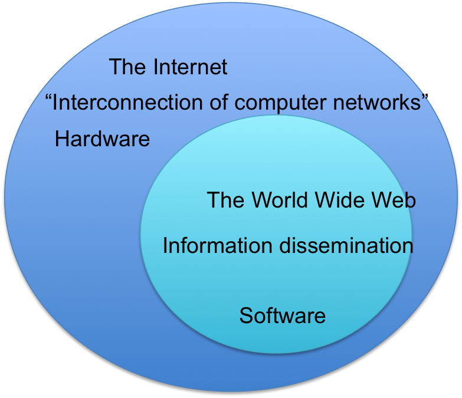

Before the internet had come alive, scientists were already imagining a worldwide
networks of information. Nikola Telsa imagined a world wireless system in the
the early 1900's. The first prototype of the internet was developed in the late
1960's with the creation of the Advanced Research Projects Agency Network (ARPANET).
This was invested by the US Department of Defense. ARPNET used packet switching so that multiple
computers can communicate on a single network. This technology thrived in the 1970's after Robert Kahn
and Vinton Cerf created TCP/IP. TCP/IP is a communications model that has set standards on how data
transmits between multiple networks. This is until ARPNET decided to adopt TCP/IP in 1983. From there,
researchers assembled the networks of networks, which then became the modern internet.
The online world began to get recognized in 1990. The internet became a network of hardware such as computers,
cables, and routers that allows any computer to directly access other computers and exchange data.
Source: Who invented the internet